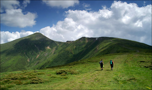
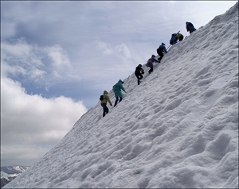

Для чтого люди піднімаються в гори?
О гори! Гори! Час недарма вивірив,
Возніс вас у надхмарну височінь,
Аби дрібному нагадать про виміри,
Мізерне – заховать у вашу тінь
Вони дивують своєю красою та маштабами, живописною палітрою та формами. Багато із нас саме до них приходять немов на
сповідь, щоб зцілити свою душу і вдихнути розрідженого повітря якоїсь особливої, пiдчас невловимої свободи. Саме тут,
можна отримати енергію і силу, яку випромінюють ці дивовижні і величні Гори. Лише в горах ти знайдеш справжнього себе!
Тут дихається вільно, на повні груди, бо скрізь панує атмосфера простоти й щирості, тут справжнє все, як сама природа.

Гори як завжди незрiвняннi у своїй красі та непідкореності. Вони є стражами невловимого вітру… Вони розмовляють з
хмарами, окутуються в них і непорушно стоять, зверхньо споглядаючи на всіх тих, хто намагається позбавити їх волі і
дичини природи. Їм байдуже на твоє прагнення досягти екстріму, на твоє бажання злетіти і вкрасти шматочок обрію. Гори…
Вони прекрасні, але водночас можуть бути жорстокими і приймають далеко не кожного.
Пiдкорити їх – вдача одиниць. Але, якщо ти все-таки зробив це, дістався вершини, то стаєш сильнішим. І тоді, вони
відкривають твою душу, пробуджуючи чутливість та чуйність до світу. Ці велетнi гартують, додають твердості крокам і
впевненості твоєму чолу. І чим довший твій шлях, тим ще з більшою жагою продовжуєш прагнути туди, до їх вершин, долаючи
неймовірні труднощі, не рiдко ризикуючи життям. Що ж ми шукаємо там, де начебто немає нічого окрім холоду, каменя, льоду
й ураганного вітру?
А можливо те, що ми шукаємо, ті випробування, які ми влаштовуємо, самі по собі потрібні для того, щоб побачити або
відчути свою власну душу, божественне в собі самому? Прикладаючи iнколи позамежні зусилля, лише таким чином дізнаємося,
хто ж ми є насправді. І чим більше нам доводиться проходити крiзь це випробовування, тим чистіше і прозоріше ми стаємо.

А змішані відчуття: радість і сльози, коли стоїш на самій вершині, дають нам змогу відчути дивовижну єдність людини й
океану гір. Бо саме тут, торкаючись неба, ти почуваєш себе вільним від усього на світі! Здається, що відчуття такої
свободи не властиве людській природі, його неможливо зберегти, забрати з собою до низу. Можливо, це i є однiєю з причин,
що спонукає людей знову й знову підніматися до височенних гірських вершин, ризикуючи життям заради декількох коротких,
але незабутніх i таких жаданих миттєвостей…
Кажуть, якщо людина почула клич гір, вона буде повертатися до них знову й знову, і цього кличу їй уже не позбутися, як
би вона цього не прагнула. Бо немає в світі нічого більш досконалого ніж гори! Вони були до появлення людини і будуть
після неї, незмінні у своїй холодній величі, непідступні стражі вічності…